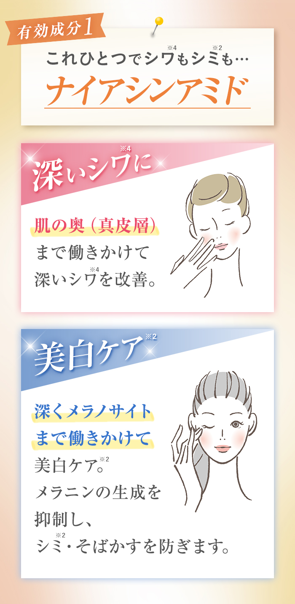
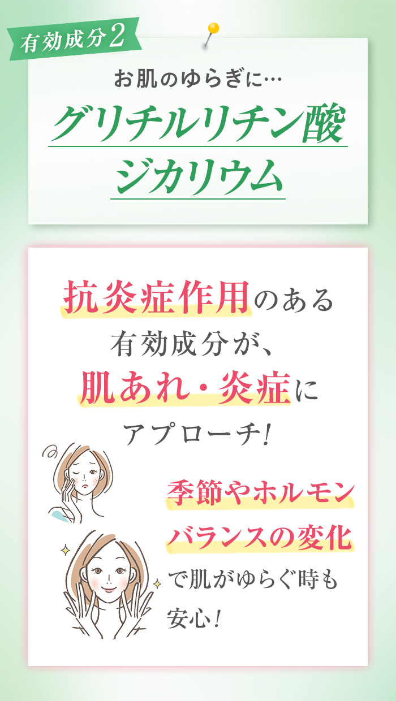
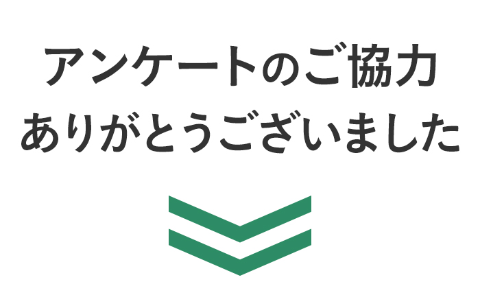

- はじめまして、CANADELです。
-
史上初（※1）！
深いシワ、美白ケア（※2）、ゆらぎ肌ケア（※3）の３つのケアができる「緑のカナデル」が誕生しました！
- あなたの年代を教えてください。
- 10代
- 20代
- 30代
- 40代
- 50代
- 60代以上

- 最近のお悩みを教えてください。
- 目元や口元の深いシワ
- 頬や目元のシミ
- ある時からゆらぎがちになったお肌
- 次の内容はカナデル バリアフィックスの特徴です。 魅力だと感じるものを選択して下さい。
- これ１つで、顔全体のシワ改善、美白ケア（※2）ができる
- 敏感肌でも攻めたエイジングケア（※5）ができる
- 医薬部外品の商品だから信頼できる
※2:メラニンの生成を抑え、シミ・そばかすを防ぐこと
※5：年齢に応じたケア
- Ｗの有効成分で繊細な女性の肌を守りながら簡単にケアすることができます

※2：メラニンの生成を抑え、シミ・そばかすを防ぐこと
※4：有効成分ナイアシンアミドが真皮に届いてシワを改善
- 肌をケアしながら攻めのエイジングケア（※5）！

※5：年齢に応じたケア
次 へ
- その他、カナデル バリアフィックスの特徴で魅力に感じるものを選んで下さい！
- 界面活性剤不使用で肌にやさしい
- ５つのフリー処方で余計なものを入れていない
- 全額返金保証だから気軽に試せる
- 有効成分の他にもしなやかな肌を叶える成分が含まれている
- カミングフローラルの香りでスキンケアも楽しく！
有TIPS
-
界面活性剤不使用で肌にやさしい
乳化技術「フィジカルラメラファンクション」のおかげで、界面活性剤フリーを実現！油分と水分を交互にサンドウィッチした特殊な構造で、肌の乾燥を防ぎます！
-
５つのフリー処方で余計なものを入れていない
鉱物油・合成香料・アルコール・合成着色料・パラベンフリーです。
-
全額返金保証だから気軽に試せる
ご使用いただき、ご満足頂けなかった場合、初回お届け分のみ「商品開封済み」でも承ります。商品到着後20日以内に、まずはお電話にてご連絡下さい！
-
有効成分の他にもしなやかな肌を叶える成分が含まれている
海藻エキス（※4）が肌をすこやかに整え、７種（※5）のハーバルエキスが、あなたのお肌をおだやか＆しなやかに！
-
カミングフローラルの香りでスキンケアも楽しく！
調香師が手掛けたアロマの香りで、深呼吸したくなる時間に…
※4：紅藻由来成分
※5：チャ葉エキス、ツボクサエキス、カンゾウ根エキス、オウゴン根エキス、ローズマリー花エキス、イタドリ根エキス、カミツレ花エキス
次 へ
